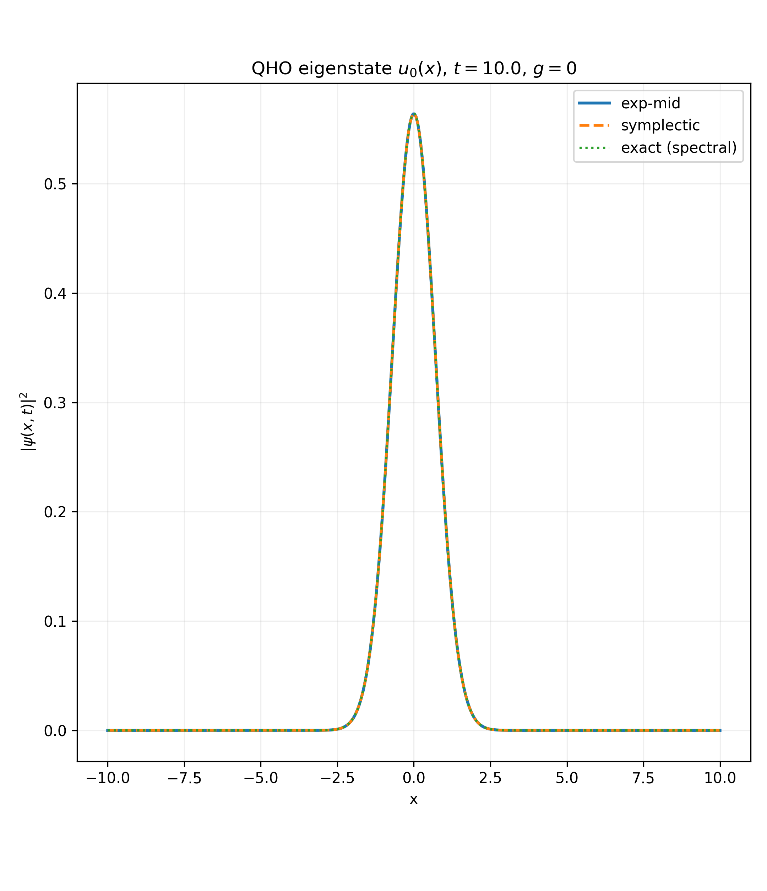
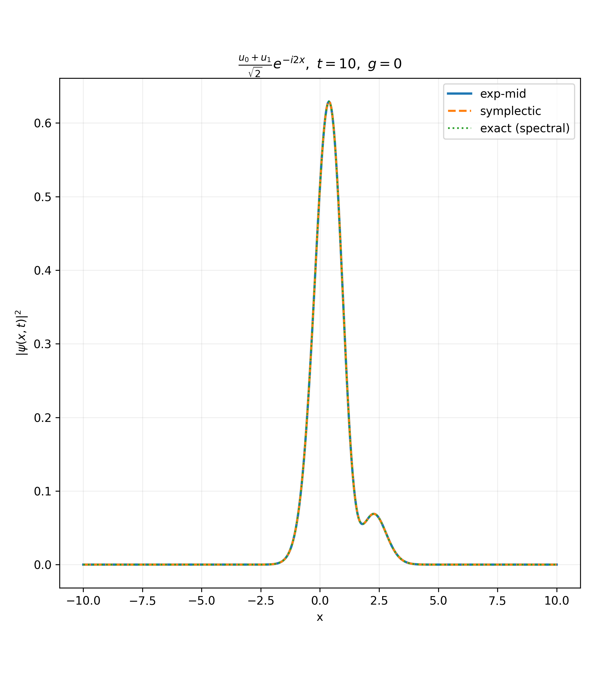
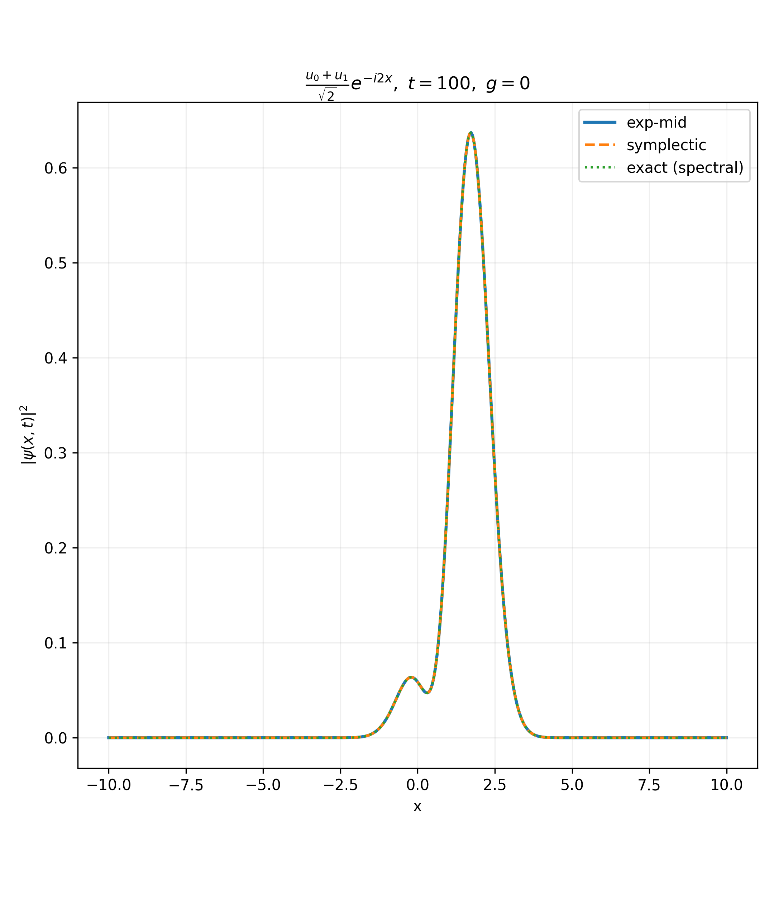
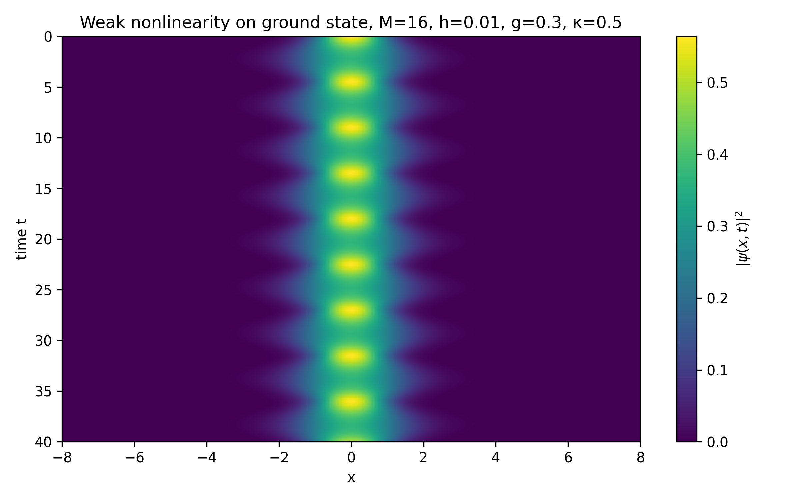
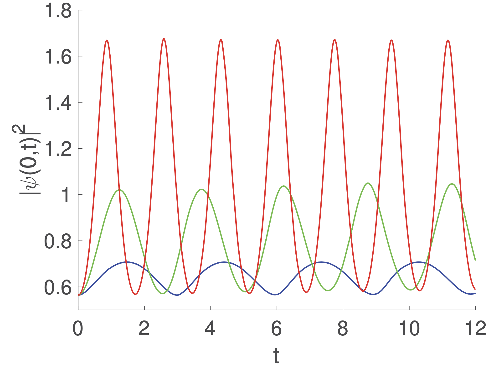
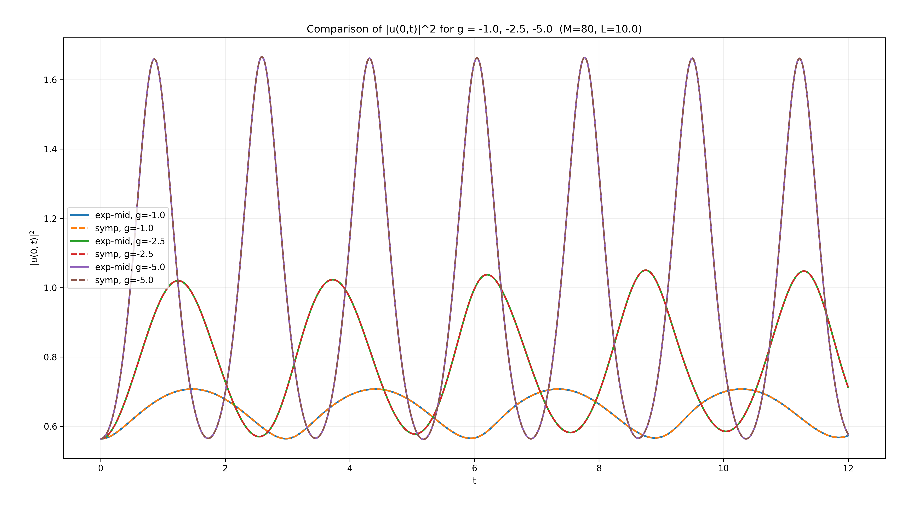
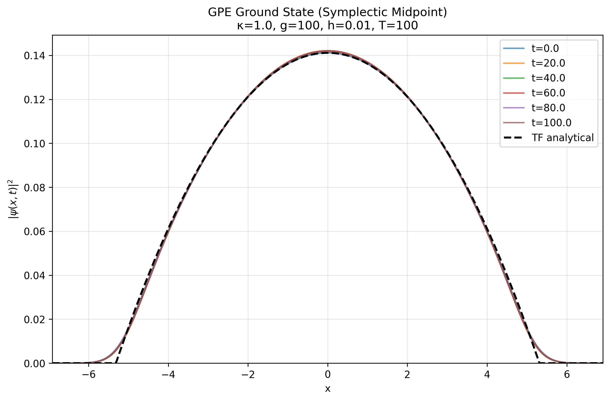
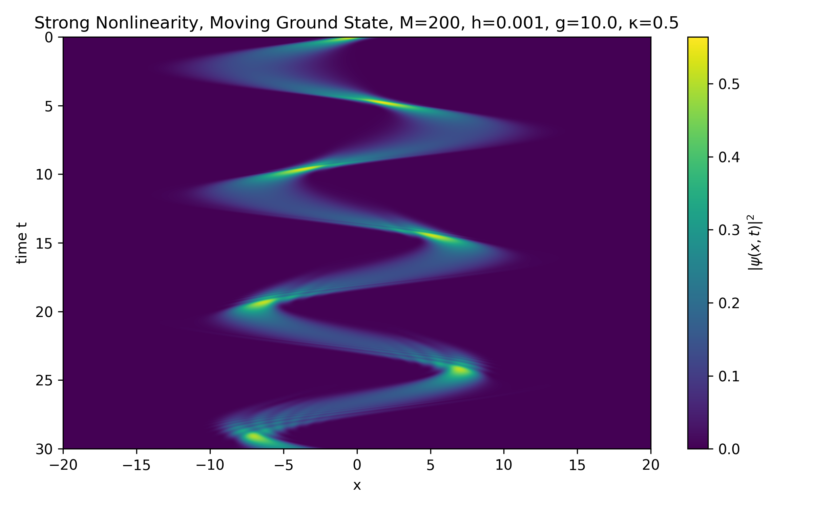

This past semester, I took a class on numerical algorithms for solving partial differential equations (PDEs). The course's final project was to implement a solver for our choice of a non-linear PDE. I thought my report and code were pretty good, so I spam-prompted ChatGPT to convert my TeX file to html; here it is!
Bose-Einstein condensate (BEC) was first theorized in 1925 by Albert Einstein. BEC is a state of matter formed by cooling a gas of bosons (integer spin particles) to near absolute 0. It exhibits lots of interesting macroscopic quantum mechanical behavior—for example, rotating a BEC forms a lattice of swirling vortices, i.e. quantization of circulation.
It’s worth understanding why cooling a bosonic gas in particular yields such rich dynamics. Bosons obey Bose-Einstein statistics, which importantly allow for an arbitrary amount of bosons in a system to occupy same energy states. This is in stark contrast to fermions, which follow the Pauli exclusion principle. Pauli exclusion prevents two identical fermions from occupying the same quantum state. Einstein’s hypothesis was that if a gas of bosonic atoms was cooled enough (i.e. removing thermal energy from the gas), they would all fall into the lowest energy quantum state. BEC was experimentally synthesized in 1995 by Eric Cornell, Carl Wieman, and coworkers.
To model BEC in ultracold (\(< 1 \mu\)K) temperatures, one typically employs the Gross-Pitaevskii equation (GPE), a type of non-linear Schrodinger equation: \[\begin{gathered} i\hbar \frac{\partial \psi(\vec{r})}{\partial t} = \left( -\frac{\hbar^2\nabla^2}{2m} +V(\vec{r}) + g|\psi(\vec{r})|^2 \right) \psi(\vec{r}) \end{gathered}\] In experiments, taking the external potential to be a harmonic trap is standard. Then, nondimensionalizing and reducing the problem to one dimension gives \[\begin{gathered} i \partial_t \psi(x, t) = \left( -\frac{1}{2} \partial_{x x} + \frac{\kappa}{2}x^2 + g|\psi(x, t)|^2\right) \psi(x, t) \end{gathered}\] where we’ve set \(\hbar, m = 1\).
General closed-form solutions are not known for the GPE. However, we can consider specific limits to benchmark against. I am omitting the \(\kappa = 0\) soliton solution due to my choice of eigenbasis, which is described in detail later on.
Putting \(g = 0\) recovers the linear Schrodinger equation for the quantum harmonic oscillator (QHO). We can isolate the spatial dependence with an ansatz of the form \(\psi(x, t) = e^{-i \omega t} u(x)\), which yields \[\begin{gathered} \omega e^{-i \omega t} u(x) = \left( -\frac{1}{2} \partial_{x x} + \frac{\kappa}{2}x^2 \right) e^{-i\omega t} u(x) \implies \omega u(x) = \left( -\frac{1}{2} \partial_{x x} + \frac{\kappa}{2}x^2 \right) u(x) \end{gathered}\] This is an eigenvalue problem with known closed-form solutions: \[\begin{gathered} \omega_n = \sqrt{\kappa} \left( n + \frac{1}{2} \right), \quad u_n(x) = \text{Hermite-Gaussian Mode} \label{eq:qho-sol} \end{gathered}\]
It would be nice to have some sort of analytical benchmark without taking one of \(\kappa\) or \(g\) to 0. One way to try and resolve this is by taking \(g\) small but non-zero. Observe that the effective potential \[\begin{aligned} V = \frac{\kappa}{2}x^2 + |\psi(x)|^2 \end{aligned}\] always evolves \(\psi\) into an even function provided \(\psi(x, 0)\) is even. Hence, consider the initial state \(\psi(x, 0) = u_0(x)\). The even-indexed QHO modes are even, so this potential only allows for transitions between \(u_0, u_2, u_4,\) etc. The transition between adjacent even eigenfunctions is \(O(g)\), so for small \(g\) and short time, we can approximate \[\begin{aligned} \psi(x, t) \approx a_0(t)u_0(x) + a_2(t)u_2(x), \quad a_0(t) \approx 1, \, a_2(t) \ll 1 \end{aligned}\] It follows that \[\begin{aligned} |\psi(x, t)|^2 &\approx |a_0|^2|u_0|^2 + |a_2|^2|u_2|^2 + 2 \Re\left( a_0^*a_2u_0u_2 \right) \nonumber \\ &= 1 + 2\Re\left( a_0^*a_2u_0u_2 \right) + O(|a_2|^2) \label{eq:breathing} \end{aligned}\] There are a few important features that Eq. [eq:breathing] possesses. For one, the second term implies a ‘pulse’ with frequency \(\omega_2 - \omega_0 = 2\sqrt{\kappa}\). We can use this period test as a benchmark for the numerical algorithm.
In the Thomas-Fermi approximation, one considers strong interactions between the bosonic atoms \((g \gg1)\). It is known that this allows for the approximation \(-\frac{1}{2}\partial_{x x} \approx 0\). Then, the time-independent equation reduces to an algebraic one that yields \[\begin{aligned} \omega f(x) = \left ( \frac{\kappa}{2}x^2 + g|f(x)|^2 \right )f(x) \implies |f|^2 = \frac{1}{g} \left( \omega - \frac{\kappa}{2}x^2 \right) \end{aligned}\] This yields complex magnitude for \(|x| \to \infty\); thus, we require the argument of the square root to be nonnegative. The reasonable path forward here is to only consider this approximation on the spatial interval for which the magnitude is real and assume the result is the limiting value (0) elsewhere: \[\begin{aligned} f = \begin{cases} \frac{1}{g} \left( \omega - \frac{\kappa}{2}x^2 \right), \quad &|x| \le R \\ 0, \quad & |x| > R \end{cases}, \quad R = \sqrt{\frac{2\omega}{\kappa}} \end{aligned}\] Note that the normalization condition1fixes \(\omega\) in terms of \(\kappa\) and \(g\), so those are the only free parameters in this model (see Appendix A).
I will continue to refer to the QHO Hamiltonian as \(H_0\)
There are several numerical challenges posed by the GPE’s form. Perhaps the largest one is the high frequency of oscillation due to \(H_0\). Eq. [eq:qho-sol] implies oscillation frequencies that increase linearly with the number of modes included, i.e. the system is very stiff. For this reason, an exponential integrator (similar to the final homework assignment) felt like a natural approach. This is due to the fact that we discretize our system by expanding in the QHO eigenfunctions2, and then propagate the linear part of the GPE exactly using the QHO eigenvalues.
Moreover, using the rotated implicit midpoint procedure covered in the homework assignments, we can make this scheme symplectic. Since the GPE is used for modeling physics phenomena, this is particularly important to ensure conservation of the mass, energy, and volumes in phase space. Both of these exponential approaches are second order in time (global error \(O(h^2)\)).
We work with equation \[\begin{aligned} i \partial_t \psi = H_0\psi + g|\psi|^2 \psi \end{aligned}\] We approximate \(\psi\) using an expansion in \(M\) QHO modes \[\begin{aligned} \psi(x, t) \approx \psi_M(x, t) = \sum_{0}^{M-1} c_n(t) u_n(x) \label{eq:disc-psi} \end{aligned}\] It will be convenient to write quantities as vectors for when we discretize the system: \[\begin{aligned} c(t) = \left [ c_0(t), \ldots, c_{M-1}(t) \right ]^{\top}, \quad u(x) = \left [ u_0(x), \ldots, u_{M-1}(x) \right ]^{\top} \implies \psi_M(x, t) = c(t)^{\top}u(x) \end{aligned}\] We use Galerkin reduction on [eq:disc-psi] by forcing the error within the \(M\) eigenmodes to be 0, i.e. \[\begin{aligned} \int_{\mathbb{R}} u_n^*(x) \left [ i\partial_t \psi_M - H_0 \psi_M - g|\psi_M|^2 \psi_M \right ] \, dx = 0 \label{eq:galerkin-cond} \end{aligned}\] By orthonormality of the QHO eigenfunctions and the fact that the eigenfunctions diagonalize \(H_0\), Eq. [eq:galerkin-cond] reduces to \[\begin{aligned} \dot{c}_n(t) &= -i\omega_n c_n(t) + N_n(c(t)), \quad N_n(c(t)) = -ig \int_{\mathbb{R}} u_n^*(x) |\psi_M|^2\psi_M \, dx \end{aligned}\] Notice that the nonlinearity \(N_n\) takes in the entire vector \(c(t)\) as input. In vector form, this can be written more concisely like \[\begin{aligned} \dot{c}(t) = Lc(t) + N(c(t)) \label{eq:ode-system} \end{aligned}\] where \(L\) is a diagonal matrix whose entries are \(\{-i\omega_k\}_{k=0}^{M-1}\).
Call the time-step \(h\). Then, the exact solution to Eq. [eq:ode-system] is \[\begin{aligned} c(t_m + h) = e^{hL}c(t_m) + \int_{0}^{h} e^{(h-s)L}N(c(t_m + s)) \, ds \end{aligned}\] For notational convenience, define \(c^{m} \equiv c(t_m)\) and put \(A = e^{hL}\). Moreover, as done in the last homework assignment, we approximate the nonlinearity \(N\) by its midpoint on \([0, h]\), giving \[\begin{aligned} c^{m+1} \approx Ac^m + N\left ( c^{m + \frac{1}{2}} \right ) \int_{0}^{h} e^{(h-s)L} \, ds \end{aligned}\] Define \(\Phi(hL) = \frac{1}{h} \int_{0}^{h} e^{(h-s)L} \, ds\). Observe that, since \(L\) is diagonal, for the \(n\)th mode we have \[\begin{aligned} A_n = e^{-i\omega_n h}, \quad \Phi_n(hL) = \frac{e^{-i\omega_nh}-1}{-i\omega_n h} = \frac{A_n-1}{-i\omega_n h} \end{aligned}\] Thus, the complete scheme for the \(n\)th mode is given by \[\begin{aligned} \begin{dcases} c_n^{m + \frac{1}{2}} = \frac{c_n^{m} + c_n^{m+1}}{2} \\ c_n^{m+1} = e^{-i\omega_n h}c^m_n - \left( c_n^{m + \frac{1}{2}} \right) (h) \left( \frac{e^{-i\omega_n h} - 1}{i\omega_n h} \right) \end{dcases} \end{aligned}\] Which is implicit. I handled this with a fixed-point iteration. Below is the some of the core logic, adapted from my code (some comments and type annotations removed):
def precompute_linear_coefficients(num_modes, spring_constant, dt) -> tuple:
kappa = spring_constant
n = np.arange(num_modes)
omega = np.sqrt(kappa) * (n + 0.5)
lamda = -1j * omega
expo_arg = lamda * dt
A = np.exp(expo_arg)
Phi = (A - 1.0) / expo_arg # see paper
return omega, A, Phi
def exp_midpoint_step(coeffs_n, A, Phi, U, U_conj, weights, g, dt, tol, max_iter) -> np.ndarray:
# initial guess: linear evolution
c_guess = A * coeffs_n # elementwise
for _ in range(max_iter):
# midpoint coefficients
c_mid = 0.5 * (coeffs_n + c_guess)
# nonlinear term at the current midpoint guess, N(c_mid)
N_mid = compute_nonlinearity(c_mid, U, U_conj, weights, g)
# do expo midpoint update
c_new = A * coeffs_n + dt * Phi * N_mid
err = np.max(np.abs(c_new - c_guess))
c_guess = c_new
if err < tol:
break
return c_guessThe function precompute_linear_coefficients explicitly
calculates the vectors \(A\) and \(\Phi\) used in our scheme, and then
exp_midpoint_step uses the resulting vectors to do the
fixed point iteration for \(c^{n +
1}\). The vector weights is for the trapezoidal rule
to approximate integrals.
Crucially, the above scheme is not symplectic. Ideally, we’d want symplecticity to conserve things like the system’s mass3, energy, etc. To derive such a scheme, we can proceed in an extremely similar manner to homework assignments 8 and 9, essentially forcing the implicit midpoint scheme. Start with the exact solution to Eq. [eq:ode-system] \[\begin{aligned} c^{m + 1} = e^{hL}c^m + \int_{0}^{h} e^{(h-s)L} N(c(t_m + s)) \, ds \end{aligned}\] Make a change of variables \(\tau = s - \frac{h}{2}\) to ‘move into the rotating frame’ \[\begin{aligned} c^{m+1} = e^{hL} c^m + \int_{-h / 2}^{h / 2}e^{(h / 2 - \tau)L} N(c(t_{m + \frac{1}{2}} + \tau)) \, d\tau = e^{hL}c^m + e^{hL / 2} \int_{-h / 2}^{h / 2} e^{-\tau L } N(c(t_{m + \frac{1}{2}} + \tau)) \, d\tau \end{aligned}\] Define rotated frame variable \[\begin{aligned} r(\tau) = e^{-\tau L}c(t_{m + \frac{1}{2}} + \tau) \implies c(t_{m + \frac{1}{2}} + \tau) = e^{\tau L} r(\tau) \end{aligned}\] Moreover, this gives \[\begin{aligned} c^m = e^{-hL / 2}r(-h / 2), \quad c^{m+1} = e^{hL / 2}r(h / 2) \end{aligned}\] We approximate the midpoint as the average of the above two values \[\begin{aligned} r(0) \approx \frac{1}{2} \left( r(-h / 2) + r(h / 2) \right) = \frac{1}{2}\left( e^{hL / 2}c^m + e^{-hL / 2}c^{m+1} \right) \label{eq:rotated-midpoint} \end{aligned}\] This is precisely our rotated midpoint. Approximating the nonlinearity at this point, we have \[\begin{aligned} c^{m+1} \approx e^{hL}c^m + e^{hL / 2}N\left( c^{m + \frac{1}{2}}_{\text{rot}} \right) \int_{-h / 2}^{h / 2} e^{-\tau L } \, d\tau = e^{hL}c^m + e^{hL / 2}N\left( c^{m + \frac{1}{2}}_{\text{rot}} \right) h\text{sinc}\left( \frac{h\Omega}{2} \right) \end{aligned}\] where \(\Omega\) is a diagonal matrix whose entries are \(\{\omega_k\}_{k=0}^{M-1}\). This scheme is also implicit, which I again handled via a fixed-point iteration. The code essentially exactly parallels the non-symplectic code, so I don’t feel it’s worth going over.
I vectorized calculations for speed—barring this, most of the code is similar to what we’ve done before. However, I had to take into account that the QHO eigenfunctions are only orthogonal on \([-\infty, \infty]\). But in my code, I can only deal with a finite interval. So, I worked over the interval \([-L, L]\). To ensure orthonormality over the interval, it’s worth recalling the shape of the eigenfunctions: the \(n\)th eigenfunction has \(n\) nodes that spread out like a parabola centered about the \(y\)-axis, and the Gaussian factor gradually 0s out the function as \(|x|\) grows. Thus, for approximate orthogonality to hold, we need the largest mode’s eigenfunction to be approximately \(0\) for \(x \in (-\infty, -L) \cup (L, \infty)\).
Moreover, I repeatedly use a matrix \(U\) in my code; this is a matrix with shape
(num_points, num_modes). \(U_{ij}\) is the \(j\)th eigenfunction evaluated at \(x_i\), i.e. \(u_j(x_i)\). This matrix is useful because
it allows for easily projecting and reconstructing wavefunctions. For
example, multiplying the eigenbasis representation of a wavefunction
from the left by \(U\) yields the
spatial representation. Analogously, mutiplying the spatial
representation of a wavefunction from the left by \(U^{\dag}\) yields the eigenbasis
representation.
def reconstruct_fn(coefficients, U) -> np.ndarray:
# ensuring shapes agree
if(U.shape[1] != coefficients.shape[0]):
print("The basis matrix shape and the coefficient vector shape are incompatible.")
return
return U @ coefficients # shape: (num_points)
def deconstruct_fn(fn, U_conj, weights) -> np.ndarray:
weighted_fn = fn * weights # elementwise multiplication
coefficients = U_conj.T @ weighted_fn # projection
return coefficientsThe core driver code for the non-symplectic integrator is as follows (there’s virtually no difference between this driver and the symplectic driver):
def evolve_gpe_midpoint(psi0_x, x, w, U, U_conj, spring_constant, g, dt, num_steps, target_norm = 1.0, store_every = 10) -> tuple:
"""
Evolve an initial wavefunction using exponential-midpoint
in the QHO basis, returning snapshots of the wavefunction
and its norms over time.
"""
num_modes = U.shape[1]
# project initial state
c = deconstruct_fn(psi0_x, U_conj, w)
c = normalize_coeffs(c, U, w, target_norm=target_norm)
omega, A, Phi = precompute_linear_coefficients(num_modes, spring_constant, dt)
# storage variables
snapshots, times, norms = [], [], []
def compute_norm(c_vec):
psi = reconstruct_fn(c_vec, U)
return np.sum(np.abs(psi)**2 * w)
# initial snapshot
snapshots.append(reconstruct_fn(c, U))
times.append(0.0)
norms.append(compute_norm(c))
for step in range(1, num_steps + 1):
c = exp_midpoint_step(c, A, Phi, U, U_conj, w, g, dt)
# OPTIONAL manual renormalization
# c = normalize_coeffs(c, U, w, target_norm=target_norm)
if step % store_every == 0 or step == num_steps:
t = step * dt
psi_t = reconstruct_fn(c, U)
snapshots.append(psi_t)
times.append(t)
norms.append(compute_norm(c))
return np.array(times), np.array(snapshots), np.array(norms)Our method exactly solves the linear system by construction. Thus, we expect exact agreement when \(g = 0\) up to discretization and numerical precision error.



This is precisely the regime in which we expect the solvers to do well—the time-evolved functions should be quite expressible in the QHO basis since the nonlinearity doesn’t take over. To test the analytical periodic motion prediction, we make phase space heat maps for each method; see Figure 5.

We can calculate the frequency associated with the periodic motion in Figure 5 by noting that since the nonlinearity will only couple the even initial state to other even eigenmodes, we can just track the motion of the coordinate at \(x=0\)4. Doing so yielded a period of 4.51, corresponding to a frequency of \(2\pi / 4.51 \approx 1.39\). Comparing to our prediction from Eq. [eq:breathing]: \[\begin{aligned} 2\sqrt{\kappa} = 2\sqrt{0.5} \approx 1.41 \end{aligned}\] So we have very strong agreement, less than 2% error. Varying \(g\) shows that the frequency agrees more strongly with the theoretical prediction as \(|g| \to 0\) and disagrees more as \(|g| \to 1\).
Moreover, we show agreement with other numerical studies of the GPE. A work by Tsednee et al. uses a split-step technique combined with a Legendre pseudospectral representation to solve different versions of the GPE, one of which is precisely the 1D GPE with a quadratic trapping potential. For parameters \(\kappa = 1.0\), \(L = 10\), and \(\psi(x, 0) = u_0(x)\), they plot \(|\psi(0, t)|^2\) vs \(t\) for \(g \in \{-1.0, -2.5, -5.0\}\)5. Figure 6 compares Figure 2(b) from Tsednee et al. with plots obtained from the implementation in this work. There is clear strong agreement. Interestingly, there appears to be a mild asymmetry in the oscillation peak for all of the \(g = -2.5\) plots6. It is unclear as to whether this is a numerical issue or the actual behavior exhibited by the GPE, but it is roughly shared by this work’s method and Tsednee et al.’s implementation.


We also consider dynamics in parameter regimes where \(g > 1\). However, as previously suggested, our scheme becomes less stable for large \(g\). An intuitive reason for this is due to the fact that the coupling between QHO modes becomes very strong, leading to high modes being occupied for small \(t\). To observe stable dynamics, then, we would like \(\psi(x, 0)\) to approximate eigenstates (or linear combinations of them) of the GPE. This can be done for the GPE ground state numerically via gradient descent; see Appendix B. We can compare this to our Thomas-Fermi approximation form, which is exactly done in 7, demonstrating relatively good stationarity over time. Of course, there will be gradual dynamics regardless of basis size due to having a finite number of modes.

Finally, we consider a less explored situation. It is known that experimental physics techniques exist to prepare a system of weakly interacting bosons in a harmonic trap (typically an optical trap). Moreover, a property known as Feshbach resonance can be driven to cause sudden, strong interactions between the atoms (corresponding to large \(g\)). Thus, we may be interested in studying what happens to a system of ultracold, almost non-interacting bosons that are suddenly driven to interact strongly. The key parameters defining this setting are \[\begin{aligned} g = 10, \, \psi(x, 0) = u_0(x) e^{-5ix}, \, \kappa = 0.5 \label{eq:new-sit} \end{aligned}\] where the phase attached to the QHO ground state is to give the initial gas some velocity in the trap; results are shown in Figure 8.

This work developed two exponential numerical solvers for the 1D GPE: an exponential midpoint method and a symplectic rotated exponential midpoint method, both in a truncated QHO eigenbasis. The Galerkin reduction led to a stiff, nonlinear ODE system whose linear part was treated exactly, enabling very good short and medium-time dynamics (particularly for weak nonlinearity).
The methods were validated across several regimes. In the linear case, both schemes reproduced the exact QHO evolution to numerical precision. This is essentially guaranteed by construction. In the weakly nonlinear regime, the numerically extracted oscillation frequency agreed with the perturbative prediction \(2\sqrt{\kappa}\) to within \(2\%\). Direct comparison with the Tsednee et al. showed strong quantitative agreement for \(|\psi(0,t)|^2\) across several values of \(g\). For stronger interactions, the numerically computed ground state matched the derived Thomas-Fermi profile and remained nearly stationary under symplectic evolution. A sudden-interaction spike further revealed interesting peak-splitting dynamics consistent with excitation of higher QHO modes.
These methods’ limitations arise primarily from basis truncation in the strongly interacting regime, suggesting that a different mode expansion is a natural start for future work.
L. Pitaevskii and S. Stringari, Bose–Einstein Condensation, Oxford University Press (2003).
F. Dalfovo, S. Giorgini, L. P. Pitaevskii, and S. Stringari, “Theory of Bose–Einstein condensation in trapped gases,” Rev. Mod. Phys. 71, 463 (1999).
G. Baym and C. Pethick, “Ground-state properties of magnetically trapped Bose condensates,” Phys. Rev. Lett. 76, 6 (1996).
Ts. Tsednee, J. M. Rost, and D. Vrinceanu, “Solving the nonlinear Gross–Pitaevskii equation via Legendre pseudospectral and split-operator methods,” arXiv:2204.09189 (2022).
C. Chin, R. Grimm, P. Julienne, and E. Tiesinga, “Feshbach resonances in ultracold gases,” Rev. Mod. Phys. 82, 1225 (2010).
\[\begin{aligned} 1 &= \int_{\mathbb{R}} \frac{1}{g} \left( \omega - \frac{\kappa}{2}x^2 \right) \, dx \\ &= \int_{-R}^{R} \frac{1}{g} \left( \omega - \frac{\kappa}{2}x^2 \right) \, dx \\ &= \frac{2}{g} \left [ \omega R - \frac{\kappa R^3}{6} \right ] \\ &\implies \omega = \frac{g}{2R} + \frac{\kappa R^2}{6} \end{aligned}\]
We can employ a ‘trick’ here; note that if we map \(t \mapsto -i\tau\), then the GPE becomes \[\begin{aligned} \partial_{\tau}\psi = \frac{1}{2}\psi_{x x} - \frac{\kappa}{2}x^2\psi + g|\psi|^2\psi \end{aligned}\] Now, expanding \(\psi(\tau)\) in its eigenbasis gives \[\begin{aligned} \psi(\tau) = e^{- \hat{H}\tau}\psi(0) = \psi(0) \left [ c_0e^{-E_0\tau}v_0 + c_1e^{-E_1\tau}v_1 + \ldots \right ] \end{aligned}\] where \(v_i\) is the \(i\)th eigenvector of the GPE system and \(E_i\) is the \(i\)th eigenvalue. This uses the fact that the Hamiltonian is time-independent, so \(\psi\)’s projection onto the system’s eigenbasis is constant in time. Now, since \(E_0 < E_1 < E_2 < \ldots\), as \(\tau\) gets large, \(\psi(\tau) \to v_0\) up to normalization. The most natural approach, then, is to keep stepping forward in \(\tau\) via the update rule \[\begin{aligned} c_n(\tau + d\tau) \;\leftarrow\; c_n(\tau) - d\tau \left[ E_n\,c_n(\tau) + \left\langle u_n,\; g\,|\psi(\tau)|^2\,\psi(\tau) \right\rangle \right], \quad \text{normalize} \end{aligned}\] where \(n\) here indexes our QHO modes, and we’ve used the fact that the QHO modes diagonalize the linear part of the Hamiltonian. There is a unique minimum (the global ground state), so we can simply continue the iteration until convergence. My code for this is below.
def compute_gpe_ground_state(x, U, U_conj, weights, g, kappa, num_modes, dt_tau = 1e-3, num_steps = 1000) -> np.ndarray:
# start from linear QHO ground state
coeffs = np.zeros(num_modes, dtype=complex)
coeffs[0] = 1.0 + 0.0j
# QHO eigenenergies
omega = np.sqrt(kappa) # alias
n = np.arange(num_modes)
En = omega * (n + 0.5) # H_QHO u_n = E_n u_n
for _ in range(num_steps):
# need to project to position space for |psi|^2psi, then project back
psi = reconstruct_fn(coeffs, basis_matrix=U)
nl_x = g * (np.abs(psi)**2) * psi
nl_coeffs = U_conj.T @ (nl_x * weights)
dcoeffs_dtau = -(En * coeffs + nl_coeffs)
# Euler step
coeffs += dt_tau * dcoeffs_dtau
# RENORMALIZE TO PREVENT DECAY TO 0!!!!
coeffs = normalize_coeffs(coeffs, U, weights, target_norm=1.0)
return coeffsThis normalization condition is a little tricky; really, we should have \(\int_{\mathbb{R}} |\psi|^2 \, dx = N\), where \(N\) the number of bosons in the gas. But we can also rescale the wavefunctions via \(\psi \mapsto \frac{\psi}{\sqrt{N}}\) Doing so gives the desired unity normalization, but note that the interaction coefficient \(g\) is then generally dependent on \(N\).↩︎
This is a double-edged sword; expanding in this basis is very convenient for handling \(H_0\), but note that we can never simulate the case in which \(\kappa = 0\) since every eigenfunction and eigenvalue would be 0. So this choice forces us to have a non-zero trapping potential. Moreover, as the nonlinearity parameter \(g\) increases, we quickly leave the realm of functions easily expressed by the QHO eigenfunctions, leading to more modes being needed. There’s a kind of Gibb’s effect issue, so this integrator won’t work well for large \(g\) over long times.↩︎
Technically, we can manually implement a function to renormalize wavefunction coefficients at every step to ‘force’ conservation of only one property.↩︎
To address this, I was careful to use an odd number of
grid points. I used SciPy’s find_peaks function, which
determines peaks by comparing a coordinate’s value to its neighboring
frames’ values. All measurement error is up to the time-step \(h\), then.↩︎
They say they plot \(g \in \{-1.0, -2.5, -10.0\}\), but I obtained almost identical results with \(g = -5.0\) instead of \(g=-10.0\). I suspect that was a documentational issue on their end. Moreover, they claim to use 128 points on their discretized grid from \([-10, 10]\), but this suggests (assuming the points are evenly spaced) that there isn’t actually an evaluation at \(x = 0\). For my analysis, I used 129 points to resolve this.↩︎
Perhaps also for the other \(g\) values, but it is harder to make out.↩︎